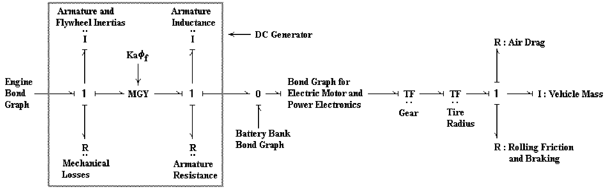
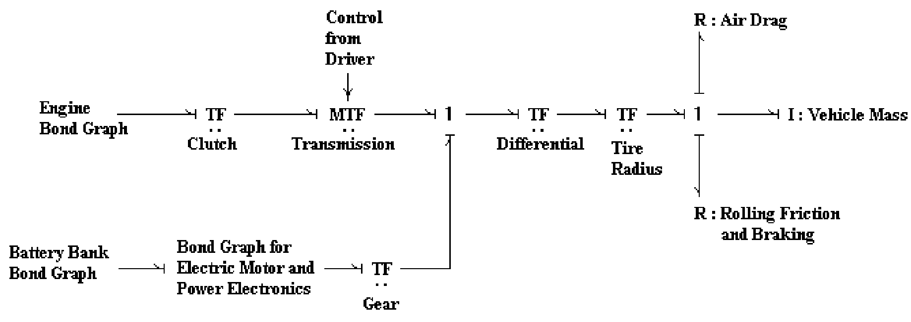
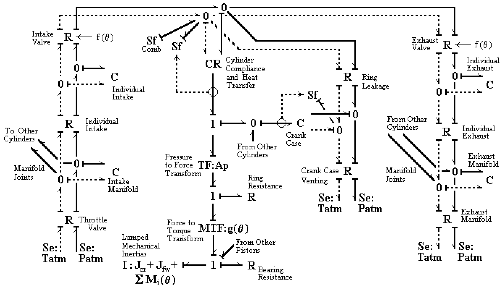
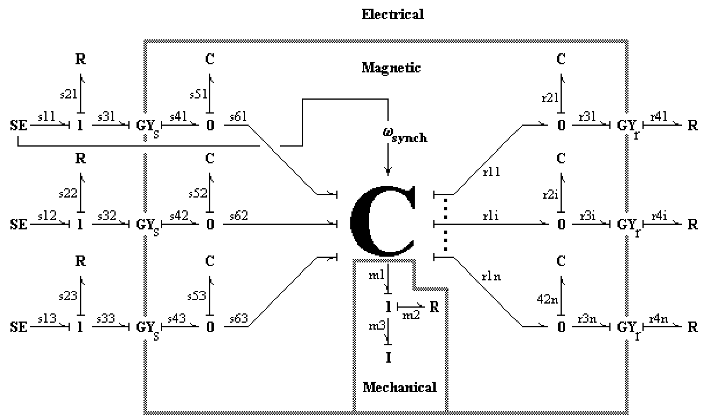
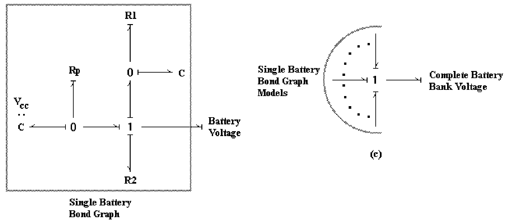
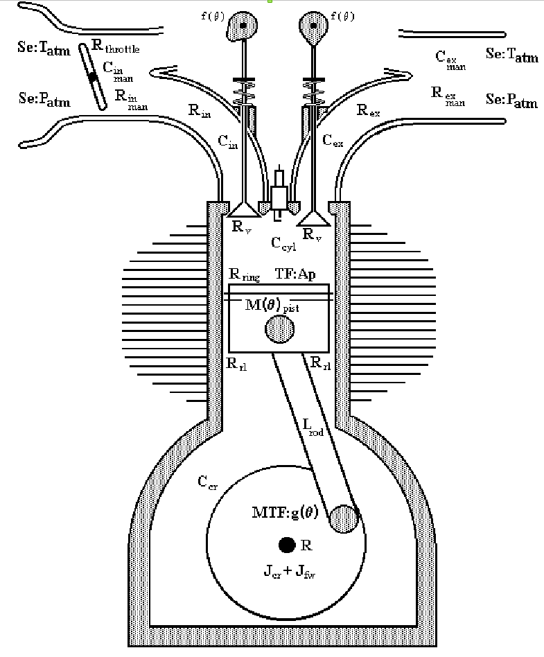

Methodologies for the Design of Hybrid Vehicle Power Plants
Ph.D. Dissertation — Mechanical Engineering — Texas A&M University — August 1997
Author: Thomas W. Ives
Chair of Advisory Committee: Dr. T. R. Lalk
Prior degrees: M.S., Texas A&M University; B.S., The University of Texas at Austin
Abstract
Design and modeling methodologies for hybrid vehicle power plants are demonstrated by using them to develop models that can help identify critical design parameters. The design methodology develops the important interrelations of general hybrid vehicle power plant design functions. The modeling methodology consists of three major aspects: approach, level of detail and modularity. The modeling is approached by using a common method and convention (i.e. language, spoken and/or written) for all disciplines so that multi-disciplined hybrid vehicle power plant design teams can work better together. The modeling is done at a level of detail that yields realistic performance predictions and that gives an adequate amount of information to give direction for design improvements. Modularity was achieved with the models, because designers need to consider several concepts and architectures when trying to find the best ways to improve predicted power plant performance. The developed models exhibited realistic performance predictions and dynamic behavior. They were used to identify critical design parameters, they were easy to reconfigure, and they proved to be useful design tools.
What this dissertation is about
In 1997, hybrid vehicle power plants were still emerging as a design challenge. You can't iterate on a hybrid drivetrain the way you can iterate on a software prototype — building physical prototypes of different architectures (series, parallel, complex hybrid; different engine/motor/battery sizings; different control strategies) is expensive and time-consuming. The opportunity was clear: if you could model these power plants accurately enough, you could explore the architecture and parameter space in simulation and only build the most promising configurations.
This dissertation tackles that opportunity not as a single model but as a methodology — a structured way to design AND model hybrid vehicle power plants so that:
- Multi-disciplined teams (mechanical, electrical, controls, thermodynamics, manufacturing) can collaborate using a common method and shared language
- Models predict realistic performance at a level of detail that informs real design decisions — not just academic curiosity
- Models are modular, so engineers can swap components (engine, motor, battery, controller) and architectures (series, parallel, complex) without rebuilding from scratch
- Critical design parameters are identified — the small set of values that, if tuned, drive most of the performance outcome
The work used bond-graph methods (a powerful technique for modeling multi-physics dynamic systems — mechanical, electrical, thermal, fluid all in one framework) and demonstrated the methodology by applying it to representative hybrid power plant configurations, including the modeling of internal combustion engines, induction motors, batteries, and thermal-fluid subsystems.
The output: a set of useful design tools — models proven to be easy to reconfigure, accurate enough to inform decisions, and structured to support team collaboration.
Selected diagrams from the work






What this dissertation demonstrates
- Multi-physics modeling depth across mechanical, electrical, thermodynamic, and control domains — bond-graph methodology is one of the more rigorous frameworks for cross-domain dynamic systems modeling
- Methodology orientation — the work isn't just “I built a model”; it's “I designed a way for teams to build and use such models.” That meta-level methodology orientation has carried through every subsequent role, from HP MEMS R&D to current AI architecture work at Microsoft
- Hybrid vehicle power plant domain expertise — engine modeling, motor modeling, battery modeling, thermal-fluid modeling, control-system design, system-level architecture exploration
- Design-for-team-collaboration thinking — the explicit emphasis on common conventions and shared language for multi-disciplinary teams reflects a leadership and facilitation instinct that long pre-dates the formal Six Thinking Hats certification
Structure of the dissertation
The full 4.2 MB PDF includes:
- Title Page, Approval Page, Dedication, Acknowledgements
- Executive Summary, Abstract
- Table of Contents, List of Figures, List of Tables
- Chapter 1 — Introduction
- Chapter 2 — Design Methodology (interrelations of hybrid power plant design functions)
- Chapter 3 — Modeling Methodology (approach, level of detail, modularity)
- Chapter 4 — Component Models (engines, motors, batteries, thermal-fluid subsystems)
- Chapter 5 — Hybrid Power Plant Architectures (series, parallel, complex; model demonstrations and performance predictions)
- Chapter 6 — Critical Design Parameters and Sensitivity Analysis
- Chapter 7 — Conclusions and Recommendations
- Appendices A through J — supporting derivations, model details, simulation code, ACSL implementations
- References, Vita